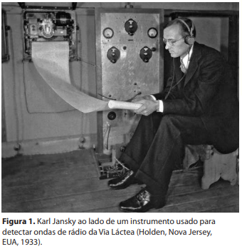
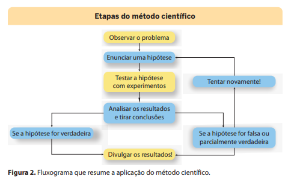
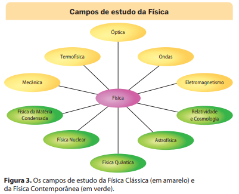

Introdução à Física
Em linhas gerais, as Ciências Naturais têm por objetivo fornecer explicações para os fenômenos da natureza, empregando para isso procedimentos rigorosos de investigação. Essas explicações dos fenômenos da natureza têm por base a observação sistemática e controlada dos fenômenos, tendo como fundamento o raciocínio lógico. Além disso, o procedimento científico parte do princípio de que toda explicação sobre determinado fenômeno natural sempre deve ser submetida a testes e críticas de outros estudiosos.
Primeiro, os cientistas observam cuidadosamente os fatos. Fato pode ser um evento ou um processo do mundo natural, percebido objetivamente a partir de nossos sentidos ou com o auxílio de instrumentos que os expandem, como microscópios e telescópios. Com base na observação controlada e criteriosa de determinados fatos, os cientistas procuram entender se há relação entre eles e como e por que determinados fatos ocorrem.
1. O método científico
Cientistas são pessoas interessadas em fazer determinadas perguntas e obter respostas para elas de maneira organizada. O trabalho científico pode ser dividido em duas áreas: ciência pura e ciência aplicada. A ciência pura envolve o questionamento e a busca de respostas para a obtenção de novas teorias e previsões. Um cientista que se dedique às ciências puras busca respostas científicas para perguntas como: “Quais partículas constituem a matéria?” ou “Do que é feito o Universo?”.
As ciências aplicadas usam conhecimentos provenientes das ciências puras para resolver problemas práticos. Um cientista que se dedique às ciências aplicadas pode trabalhar em busca de um novo medicamento ou de um novo material resistente ao calor, por exemplo. No entanto, em muitas ocasiões é difícil separar a ciência pura da ciência aplicada. Como um grupo de cientistas resolve problemas por meio da Ciência? Para isso é necessário o chamado método científico. Esse método permite resolver problemas de maneira ordenada, com base em certos processos. Mas nem todos os cientistas seguem os mesmos procedimentos e na mesma ordem.
Tomemos como exemplo o caso do engenheiro de telecomunicações Karl Jansky (1905-1950), de Nova Jersey, Estados Unidos (Fig. 1). Nos anos 1930, as chamadas radiotelefônicas da América para a Europa apresentavam muitos ruídos e Jansky foi incumbido de descobrir a fonte desses problemas. Ele construiu um sistema de antenas e montou-o sobre o chassi de um automóvel antigo, de modo que a antena pudesse se deslocar em uma trajetória circular. Descobriu, então, que a maior parte desses ruídos era causada por tempestades próximas e por outros distúrbios elétricos atmosféricos mais afastados. Entretanto, mesmo depois de essas fontes terem sido encontradas e saneadas, um ruído de fundo persistia durante as transmissões.
Após gravar o ruído por um longo período, Jansky percebeu que ele apresentava certa regularidade: era mais acentuado à mesma hora todos os dias. Além disso, observou que a fonte desse ruído de fundo movimentava-se atravessando o céu de leste a oeste, o que o levou a acreditar que ela se situava fora da Terra. Em outras palavras, a Terra estava recebendo ondas de rádio transmitidas do espaço. Qual seria sua origem? Jansky tinha por objetivo fornecer explicações para aquele fenômeno da natureza, empregando para isso procedimentos rigorosos de investigação. O primeiro passo da investigação de Jansky foi identificar o problema e estabelecer claramente uma pergunta: “Qual é a fonte do ruído que ocorre nas chamadas telefônicas para a Europa?”.
Em seguida, fez observações. Uma observação é qualquer informação que chega até nós por meio de nossos sentidos. Tudo o que podemos ver, ouvir, sentir, tocar ou cheirar é uma observação. Os cientistas fazem observações cuidadosas, pois querem conhecer o máximo possível sobre o problema em que estão trabalhando. Como os sinais de rádio não são perceptíveis diretamente por nossos sentidos, Karl Jansky construiu um sistema de antenas para captar os ruídos e descobrir a fonte deles. Os instrumentos científicos permitem fazer observações mais precisas do que as obtidas por nossos sentidos. Podem incluir desde computadores, telescópios, microscópios, lasers, termômetros e balanças até uma simples régua. O terceiro passo de Jansky foi formular uma hipótese, ou seja, uma explicação possível e razoável para aquilo que foi observado. Inicialmente, ele acreditava que o ruído era decorrente de tempestades próximas e de outros distúrbios elétricos mais afastados.

Como os cientistas determinam se suas hipóteses estão corretas? Eles realizam experimentos para testá- -las. Os registros de Jansky mostravam que a quantidade de ruído aumentava significativamente durante as tempestades. Com base nessa constatação, ele percebeu que sua hipótese aparentemente estava correta. Entretanto, depois de outro experimento com tempo bom, ele continuou a ouvir ruído, o que não podia ser explicado por sua primeira hipótese. Isso acontece muitas vezes em experimentos científicos: as informações obtidas podem contradizer a hipótese testada inicialmente. Torna-se, então, necessário descartá-la ou modificá-la para poder explicar as novas informações obtidas. Jansky precisou olhar mais longe para descobrir a fonte desse ruído. Seus registros mostravam um padrão no ruído residual, que, no começo, sugeria que ele tinha origem solar: o ruído movimentava-se de leste a oeste todos os dias. Após fazer mais observações, ele finalmente concluiu que a fonte daquele ruído eram estrelas no centro de nossa galáxia, a Via Láctea. Karl Jansky foi o primeiro cientista a observar ondas de rádio originadas de corpos celestes. Seus experimentos foram divulgados em publicações científicas e outros pesquisadores puderam aprender mais sobre essa descoberta. Com base nela, desenvolveu-se um campo de pesquisa inteiramente novo — a Radioastronomia. Assim como o método científico, o pensamento computacional segue uma abordagem sistemática de raciocínio lógico e passos determinados para resolver problemas complexos. Nesse sentido, método científico e pensamento computacional compartilham a ênfase na ideia de repetição, que acontece sucessivamente conforme necessário para aprimorar a compreensão de um problema e otimizar a solução, o que se denomina iteração. A análise crítica empregada em ambos os procedimentos é ponto-chave no ajuste e no refinamento de estratégias em busca de soluções. O diagrama a seguir (Fig. 2) representa uma forma de organizar o raciocínio lógico por trás do método científico. Diagramas desse tipo são chamados de fluxograma.

O método científico, entretanto, não é a única forma pela qual a Ciência se desenvolve. O conhecimento científico pode avançar por tentativas, com erros e acertos, podendo até mesmo se desenvolver a partir de uma descoberta acidental. Os raios X, por exemplo, foram descobertos acidentalmente quando, em 1895, o físico alemão Wilhelm Conrad Roentgen (1845-1923) fazia experimentos com eletricidade.
2. A Física
A Física (do grego physis, natureza) pode ser considerada fundamental para as outras ciências e para muitas tecnologias, uma vez que se dedica a estudar os componentes básicos dos diferentes fenômenos e leis que governam interações físicas entre eles
O campo de estudo da Física Clássica é geralmente dividido em cinco grandes áreas: Mecânica, Termofísica (calor e termodinâmica), Óptica (luz e visão), Ondas (que inclui o estudo do som e da audição) e Eletromagnetismo (eletricidade e magnetismo). A Física Contemporânea ou Moderna, que teve início com as teorias elaboradas a partir do início do século XX, abrange a Relatividade e a Cosmologia, a Astrofísica, a Física Quântica, a Física Nuclear e a Física da Matéria Condensada
